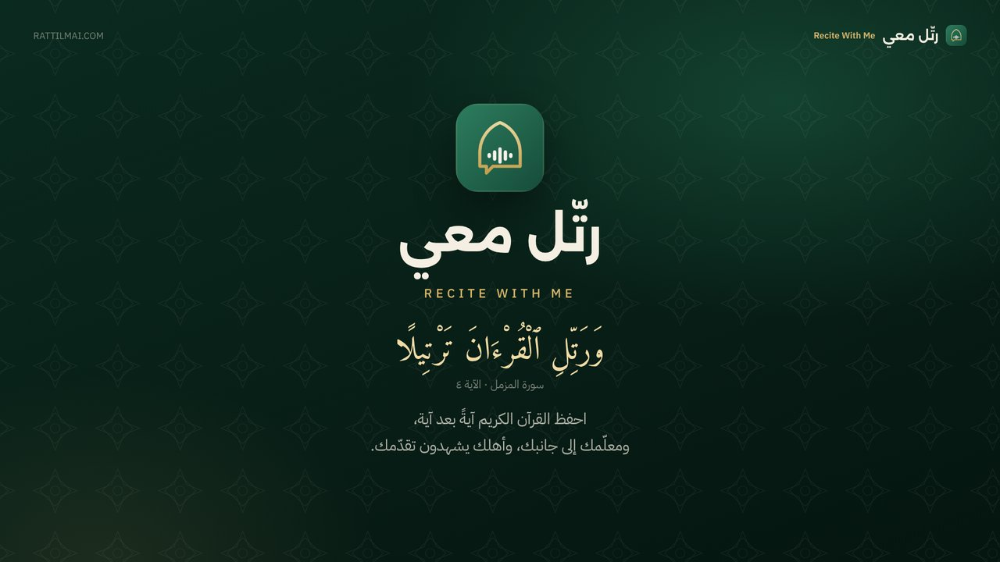

تعرّف إلى التطبيق في فيلمٍ قصير وعرضٍ تقديمي.
فيلم تعريفي بصوت راوٍ، وعرض تقديمي متحرك: الخطة اليومية، والاستماع والتسميع، والمعلّمون الموثَّقون والدروس المباشرة عبر الإنترنت، وتقارير الوالدين، والمصادر والمبادئ التي يقوم عليها التطبيق.
رسائل واتساب والبريد تتضمن الرابط ورمز الدخول.

افتح العرضللتنقل: الأسهم، أو السحب، أو النقر على طرف الشريحة. تعرض كل شريحة حركتها ثم تستقر.
في آيفون: اضغط «حفظ الفيلم في الصور» ثم اختر «حفظ الفيديو»، أما التنزيل العادي فيُحفظ في تطبيق «الملفات». في أندرويد: يُحفظ التنزيل في مجلد «التنزيلات»، ويظهر في المعرض وصور Google. وإن لم يبدأ التنزيل، فافتح الصفحة في Chrome أو Safari بدلًا من فتحها داخل واتساب.
المنشورات العامة تشارك الرابط دون رمز الدخول، ومن أراد الدخول طلب الرمز منك. أما واتساب وتيليجرام والبريد فتتضمن الرمز، لأنها تصل إلى من تختارهم.
نص القرآن: مصحف المدينة النبوية، برواية حفص عن عاصم. الأذكار والأدعية: «حصن المسلم» مع تخريج الأحاديث. صفحة خاصة · rattilmai.com